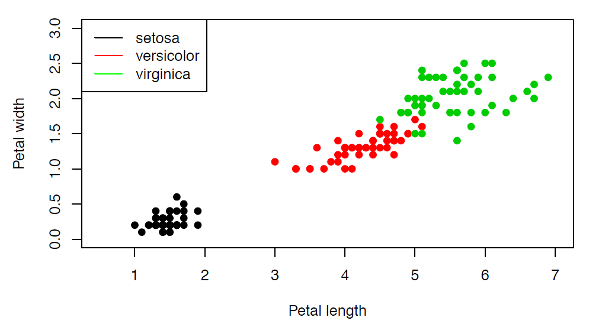
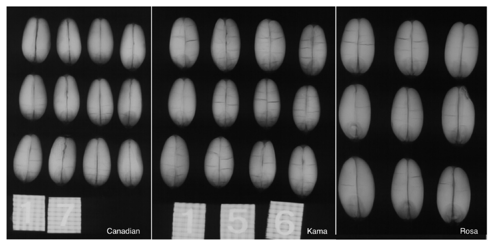
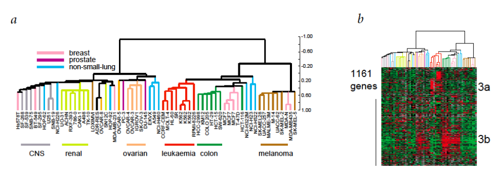
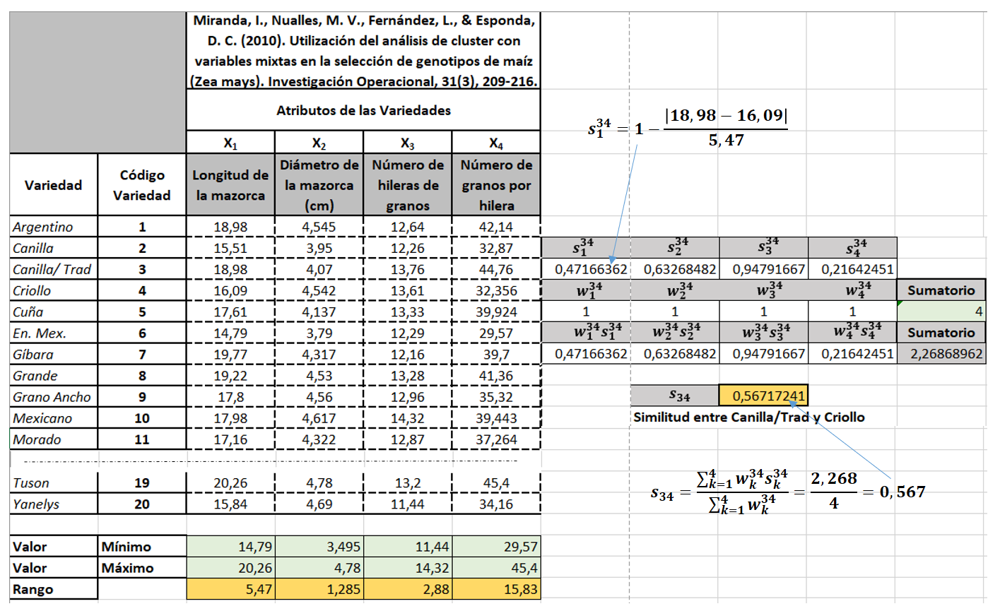
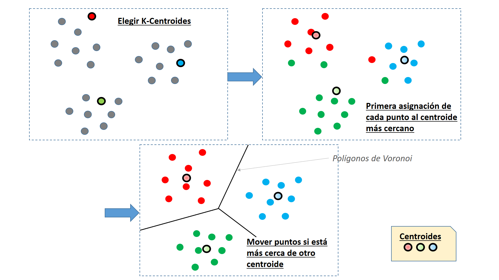
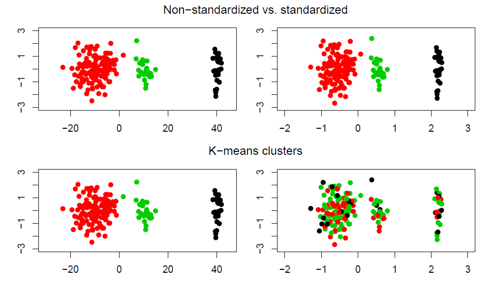

Aprendizaje no supervisado. Clustering#
import matplotlib.pyplot as plt
%matplotlib inline
import pandas as pd
import numpy as np
from skimage import io
from IPython import display
import warnings
warnings.filterwarnings("ignore", category=UserWarning)
Aprendizaje no supervisado#
Aquí partimos de un conjunto de validación que no ha sido clasificado previamente.
Este conjunto de validación está formado por \(N\) registros \(\{ x^1, ..., x^i, ..., x^N \}\), cada una de las cuales está descrito por un vector de \(n\) atributos, por tanto \(x^i \in R^n\).
Al no existir la matriz \(y\) con la variable objetivo, no existe un conjunto de entrenamiento.
Los métodos no supervisados pretenden “aprender” relaciones entre los datos y clasificarlos “sin usar conocimiento previo”.
Estos métodos se basan en buscar estructuras, patrones o características que sirvan para aprender posibles relaciones en los datos.
Clustering#
Clustering se refiere a las técnicas para encontrar subgrupos o clusters en conjunto de datos. Cuando se hace un cluster se buscan particiones en las que las observaciones sean similares entre sí.
El clustering busca encontrar subgrupos homogéneos en las observaciones.
Para realizar las agrupaciones utilizamos las distancias o similitudes entre los vectores de atributos \(x\) asociados a distintos registros.
Un ejemplo de clustering para el grupo Iris:
{kind=link}
O un ejemplo de agrupación de semillas:
{kind=link}
O finalmente un ejemplo de cultivos celulares:
{kind=link}
Las redes de coexpresión génica (GCN) son una herramienta fundamental para caracterizar genes mediante el estudio de sus patrones de correlación. Los genes se agrupan en función de su similitud formando módulos (grupos). Se asume que los genes que se encuentran en el mismo módulo están relacionados con un fenotipo determinado, una enfermedad o tienen una función similar. Los métodos habituales para generar GCN usan algoritmos de clustering.
Objetivo#
Dadas N observaciones (registros) de n atributos, queremos asignarlas a K grupos de forma que:
Cada elemento esté asignado a un único grupo.
Todo elemento esté asignado a algún grupo.
Cada grupo sea internamente homogéneo.
Los grupos sean distintos (separados) entre sí.
A veces la primera de las condiciones se relaja (“análisis de grupos difusos” o “fuzzy cluster analysis”).
Métodos de agrupamiento#
Métodos de partición. Tenemos datos heterogéneos y queremos dividirlos en un número de grupos conocido de antemano (K-means).
Métodos jerárquicos. Se descomponen jerárquicamente los datos de acuerdo con su proximidad o similitud. Inspirados en el paradigma Darwiniano (hipótesis similaridad - proximidad evolutiva en filogenias)
Métodos basados en densidades. Utilizan el grado de aglomeración de los datos para estimar los grupos (DBSCAN).
Métodos basados en distribuciones. Proponen un modelo como hipótesis y se busca el mejor ajuste de los datos (”Gaussian mixture models”, ajustados mediante el algoritmo de “expectation-maximization”).
Similitud y distancia#
¿Cómo asignamos una observación a un grupo?
En función de la distancia de esa observación a los elementos del grupo.
En función de la similitud de esa observación a los elementos del grupo.
En un espacio vectorial se define una distancia \(d_{ij}\) entre dos vectores \(x^{(i)}\) y \(x^{(j)}\) si cumple:
\(d_{ij} \ge 0\). Además si \(d(u, v) = 0 \rightarrow u=v\) (definida positiva).
\(d_{ij} = d_{ji}\) o propiedad simétrica.
\(d_{ij} + d_{jk} \ge d_{ik}\) o propiedad triangular.
Las medidas de distancia son útiles cuando los atributos son cuantitativos exclusivamente.
Ejemplos de distancia:
Distancia euclídea:
Distancia rectangular (Manhattan) (ver detalle):
Distancia Mahalanobis (cercanía entre variables aleatorias multidimensionales, teniendo en cuenta la correlación entre las variables aleatorias):
Siendo \(\Gamma\) la matriz de varianzas y covarianzas.
Similitud#
En el espacio vectorial \(\mathcal{R}^n\) se define la similitud entre dos vectores \(u\) y \(v\) como
\(0 \le s_{ij} \le 1\)
\(s_{ij} = s_{ji}\)
\(s_{ii}=1\)
Por ejemplo el coeficiente de Gower se puede emplear para calcular la similitud tanto para propiedades continuas como discretas:
Siendo \(s_p^{ij}\) la similitud entre los registros i y j para el atributo p, \(w_k^{ij} \in \{0,1\}\) (según esté el atributo incluido o no), y el rango del atributo
Las medidas de similitud son útiles cuando los atributos son categóricos (o de ambos tipos).
En el caso de usar una similitud los algoritmos de clustering seran igual pero sustituyendo la matriz de distancia por una de similitud. La diagonal principal serían unos y el cálculo de las similitudes entre dos elementos sería como se indica en el ejemplo que aparece a continuación.
Se calcula la similitud entre las variedades Canilla/Trad y Criollo. Se consideran todas los atributos incluidos entre las dos variedades consideradas.
{kind=link}
Clustering K-Medias, K-Means o Algoritmo Lloyd#
El algoritmo K-Means o K-Medias propuesto por Lloyd pretende partir un conjunto de \(N\) registros u observaciones en \(K\) grupos, de forma que su distancia al centroide de cada grupo sea mínima (o la similitud con respecto al centroide sea máxima).
El algoritmo mínimiza la Inercia que es la suma de las distancias al cuadrado entre cada punto y su centroide
Se suponen \(N\) observaciones \(x_i\) que conforma el conjunto de entrenamiento \(X\) y que tienen una dimensión \(p\). Se quieren obtener \(K\) grupos representados por unos prototipos tambien \(p\)-dimensionales:
Los prototipos \(Z\) no tiene que ser muestras del conjunto de observaciones, pero tienen que representarlo bien.
Cada observación \(x_i\) se asignar a uno de los prototipos. Por ejemplo \(A(x_i)=j\), lo que signica que el prototipo \(j\)-ésimo se usa para representar o aproximar \(x_i\) .
La función objetivo a optimizar es:
En la anterior función se está utilizando la distancia euclídea y se está optimizando el error cuadrático total entre las muestras de entrenamiento y sus prototipos. Y lo que ha de buscarse es la función de asignación \(A\) y los prototipos que minimicen la Inercia o error cuadrático total.
Hay dos condiciones para una solución óptima:
Condición 1: Dados unos prototipos fijos ya conocidos \(Z\), la función de asignación es la regla del vecino más cercano, que con la distancia ecuclídea sería:
\[A(x_i)= \underset{j \in \{1,...,K\}}{\arg\min}|x_i-z_j|\]Condición 2: Dada una función de asignación \(A(.)\), el prototipo \(z_j\) debe ser el promedio de todas las observaciones asignadas a él, que es el centroide:
Las dos condiciones anteriores dan lugar a los pasos del algoritmo que se van alternando:
Para un conjunto fijo de centroides (prototipos), optimizar \(A\) asignando cada observación a su centroide más cercano utilizando la distancia euclidea.
Actualizar los centroides calculando el promedio de todas las muestras asignadas a él.
El algoritmo se detenie cuando las asignaciones \(A(.)\) entre dos iteraciones no sufren cambios o sufren un porcentaje de cambios menores a una tolerancia o cuando se supera un máximo de iteraciones.
Y el algoritmo se inicia creando una primer versión de los prototipos. Esto puede hacerse de varias maneras, aleatoriamente asignado los valores de una observación \(x_i\) como coordenadas de un prototipo \(z_j\) o proporcionando una semillas \(z_j\) que no tienen porque coincidir con ninguna observación, pero han de representar bien el conjunto de entrenamiento
Resumiendo gráficamente los pasos del algoritmo
{kind=link}
Observaciones sobre el algoritmo K-Medias:
Algoritmo abordable con una programación estándar aunque conviene estructurar las n observaciones en un árbol kd donde los puntos d-dimensionales se dividen en k medianas sucesivas, lo que facilita las búsquedas.
El algoritmo es muy dependiente de la elección random de los primeros K puntos como centroides iniciales.
Matemáticamente equivale a dividir el espacio de atributos en polígonos o celdas de Voronoi.
Estandarización de atributos#
La suma de cuadrados NO es invariante bajo cambios de escala:
Si las unidades de medida de los atributos son distintas, el resultado de K-means puede depender de cambios irrelevantes en la escala de medida.
Entonces conviene estandarizar cada atributo de forma univariante: restamos la media y dividimos entre la desviación típica. Así las medidas de distancia tienen sentido.
Cuando tenemos las mismas unidades suele ser mejor no estandarizar:
{kind=link}
Pros y contras de K-Medias#
Ventajas:
Es eficiente (converge rápidamente).
La busqueda heurística termina en un óptimo local.
Desventajas:
No robusto frente a observaciones atípicas.
No aplicable si las variables son categóricas (necesitamos que la media esté definida).
No funciona si se buscan grupos no convexos.
El número de grupos K no es un resultado del método (debe especificarse al inicio).
Segmentación de los datos Iris con K-means#
Se utilizan los 4 atributos del sépalo y pétalo (alto y largo) para segmentar en 3 grupos
from sklearn.datasets import load_iris
import pandas as pd
iris = load_iris()
df = pd.DataFrame(iris.data, columns=iris.feature_names)
df['target']=iris['target']
df.head()
| sepal length (cm) | sepal width (cm) | petal length (cm) | petal width (cm) | target | |
|---|---|---|---|---|---|
| 0 | 5.1 | 3.5 | 1.4 | 0.2 | 0 |
| 1 | 4.9 | 3.0 | 1.4 | 0.2 | 0 |
| 2 | 4.7 | 3.2 | 1.3 | 0.2 | 0 |
| 3 | 4.6 | 3.1 | 1.5 | 0.2 | 0 |
| 4 | 5.0 | 3.6 | 1.4 | 0.2 | 0 |
X = df.values[:,0:4]
y = df.values[:,4]
import matplotlib.pyplot as plt
clases = iris['target_names']
marcas = ['*', 'o', 's']
color = ['red', 'green', 'blue']
plt.figure(figsize=(7, 5), dpi=80)
for i in range(len(clases)):
plt.scatter(X[y==i,2], X[y==i,3], c=color[i], alpha=0.5, marker=marcas[i], label=clases[i])
plt.xlabel("Longitud de pétalo")
plt.ylabel("Ancho de pétalo")
plt.legend(loc='upper left')
plt.show()

Se llevará a cabo una agrupación de 3 grupos (n_cluster), se ejecuta el algoritmo 10 veces (n_init) independientemente con diferentes centroides aleatorios para elegir el modelo final que tiene la Inercia más baja. Se elege una tolerancia (tol) de 0.0001 (\(10^{-4}\)) para controlar la convergencia de los mínimos cuadrados.
Un problema con k-means es que uno o más grupos pueden estar vacíos. Sin embargo, en la implementación actual de kmeans en scikit-learn, si un grupo está vacío, el algoritmo tomará la muestra más cercana al centroide del grupo vacío. Luego reasignará el centroide para que sea el punto más alejado.
La variable init permite los tipos:
‘k-means++’: selecciona los centros de clúster iniciales para el agrupamiento de k-means de una manera inteligente para acelerar la convergencia.
‘random’: elija n_clusters observaciones (filas) al azar de los datos para los centroides iniciales.
ndarray: debe tener forma (n_clusters, n_features) y en él se proporcionan los centros iniciales o semillas.
callable: se le pasa el nombre de una rutina externa que realiza la inicialización.
from sklearn.cluster import KMeans
km = KMeans(n_clusters=3, init='random', n_init=10, max_iter=300, tol=1e-04, random_state=1)
y_km = km.fit_predict(X)
km.cluster_centers_
array([[5.006 , 3.428 , 1.462 , 0.246 ],
[5.9016129 , 2.7483871 , 4.39354839, 1.43387097],
[6.85 , 3.07368421, 5.74210526, 2.07105263]])
semillas = [[6.85 , 3.07368421, 5.74210526, 2.07105263],
[5.006 , 3.428 , 1.462 , 0.246 ],
[5.9016129 , 2.7483871 , 4.39354839, 1.43387097]]
km = KMeans(n_clusters=3, init=semillas, n_init='auto', max_iter=300, tol=1e-04, random_state=1)
y_km = km.fit_predict(X)
y_km
array([1, 1, 1, 1, 1, 1, 1, 1, 1, 1, 1, 1, 1, 1, 1, 1, 1, 1, 1, 1, 1, 1,
1, 1, 1, 1, 1, 1, 1, 1, 1, 1, 1, 1, 1, 1, 1, 1, 1, 1, 1, 1, 1, 1,
1, 1, 1, 1, 1, 1, 2, 2, 0, 2, 2, 2, 2, 2, 2, 2, 2, 2, 2, 2, 2, 2,
2, 2, 2, 2, 2, 2, 2, 2, 2, 2, 2, 0, 2, 2, 2, 2, 2, 2, 2, 2, 2, 2,
2, 2, 2, 2, 2, 2, 2, 2, 2, 2, 2, 2, 0, 2, 0, 0, 0, 0, 2, 0, 0, 0,
0, 0, 0, 2, 2, 0, 0, 0, 0, 2, 0, 2, 0, 2, 0, 0, 2, 2, 0, 0, 0, 0,
0, 2, 0, 0, 0, 0, 2, 0, 0, 0, 2, 0, 0, 0, 2, 0, 0, 2])
La inercia es la suma de la distancia al cuadrado entre cada punto y su centroide
print(km.inertia_)
iner = 0
for et in np.unique(y_km):
centr = km.cluster_centers_[et]
for x in X[y_km==et]:
iner += ((centr[0]-x[0])**2 + (centr[1]-x[1])**2 + (centr[2]-x[2])**2 + (centr[3]-x[3])**2)
print(centr,iner)
print(iner)
78.85144142614601
[6.85 3.07368421 5.74210526 2.07105263] 23.879473684210524
[5.006 3.428 1.462 0.246] 39.03047368421053
[5.9016129 2.7483871 4.39354839 1.43387097] 78.85144142614607
78.85144142614607
Podemos mostrar las coordenadas de los centroides
Directamente mostrando la variable cluster_centers_ que aparece en el objeto que hemos creado con KMeans o algo más vistoso con un DataFrame:
pd.DataFrame(columns=df.columns[0:4],index = np.arange(3),data = km.cluster_centers_)
| sepal length (cm) | sepal width (cm) | petal length (cm) | petal width (cm) | |
|---|---|---|---|---|
| 0 | 6.850000 | 3.073684 | 5.742105 | 2.071053 |
| 1 | 5.006000 | 3.428000 | 1.462000 | 0.246000 |
| 2 | 5.901613 | 2.748387 | 4.393548 | 1.433871 |
La visualización del ajuste realizado es el siguiente:
import matplotlib.pyplot as plt
clases = iris['target_names']
clases = ['virginica','setosa','versicolor']
marcas = ['*', 'o', 's']
color = ['red', 'green', 'blue']
plt.figure(figsize=(7, 5), dpi=80)
for i in range(len(clases)):
plt.scatter(X[y_km==i,2], X[y_km==i,3], c=color[i], alpha=0.5, marker=marcas[i], label=clases[i])
plt.xlabel("Longitud de pétalo")
plt.ylabel("Ancho de pétalo")
plt.legend(loc='upper left')
plt.show()
Medidas de validación interna#
Objetivos:
Queremos grupos homogéneos.
Tienen que estar bien separados entre sí.
En K-means:
Buscamos el menor cociente entre la variabilidad intra-grupo y la variabilidad total (grupos homogéneos).
Buscamos el mayor cociente posible entre la variabilidad entre grupos y la variabilidad total (grupos separados).
Método del codo#
Para cuantificar la calidad de la agrupación, necesitamos utilizar métricas intrínsecas, como la Inercia (suma de la distancia al cuadrado de cada uno de las observaciones a su centroide) dentro del cluster. La Inercia mide la distorsión, y permite comparar el rendimiento de diferentes agrupaciones de k-medias. No es necesirio calcular de forma explícita la Inercia dentro del clúster cuando usamos scikit-learn, ya que es accesible a través del atributo inertia_ después de ajustar un modelo KMeans.
Se puede graficar el nº de Clusters contra la Inercia interna, lo que nos permite obtener el nº de cluster optimo. Se denomina método del codo por la forma que adopta el gráfico, ya que en el cambio brusco de la pendiente se situa el óptimo (en nuestro ejemplo se ve que está entre 2 y 3):
distortions = []
for i in range(1, 11):
km = KMeans(n_clusters=i, init='k-means++', n_init='auto', max_iter=300, tol=1e-04, random_state=1)
km.fit(X)
distortions.append(km.inertia_)
plt.figure(figsize=(7, 4), dpi=80)
plt.plot(range(1,11), distortions, label="Inercia vs k")
plt.xlabel("Número de Clusters")
plt.ylabel("Distorsión")
plt.legend(loc='upper right')
plt.show()
Se puede calcular la Inercia relativa dividiendo por la Inercia total, calculada con K = 1
km = KMeans(n_clusters=1, init='k-means++', n_init='auto', max_iter=300, tol=1e-04, random_state=1)
km.fit(X)
Iner_total = km.inertia_
distortions = []
for i in range(1, 11):
km = KMeans(n_clusters=i, init='k-means++', n_init='auto', max_iter=300, tol=1e-04, random_state=1)
km.fit(X)
distortions.append(km.inertia_/Iner_total)
plt.figure(figsize=(7, 4), dpi=80)
plt.plot(range(1,11), distortions, label="Inercia vs k")
plt.xlabel("Número de Clusters")
plt.ylabel("Distorsión")
plt.legend(loc='upper right')
plt.show()
Criterio de la silueta#
El coeficiente de silueta se calcula utilizando la distancia media dentro del grupo (a) y la distancia media del grupo más cercano (b) para cada muestra \(x_i\) del conjunto \(X\).
Para cada \(x_i\) se calcula \(a_i\) como la distancia media al resto de puntos de su grupo. Y se calcula \(b_i\) como la distancia media al siguiente grupo más cercano. Siendo el valor de la silueta en \(x_i\), si el grupo al que pertenece tiene más de 1 punto:
En el caso que \(x_i\) sea un punto aislado, \(s_i\) se hace a \(0\) para evitar que proliferen.
Si \(a_i=b_i\) se cumple que \(s_i=0\) y en general se cumple \(-1 \le s_i \le 1\).
Si \(a_i << b_i\) el valor de \(s_i\) se acerca a 1. Como \(a_i\) mide la disimilitud de la muestra \(i\) con respecto a su grupo y \(b_i\) mide la disimilitud en el grupo vecino, cuando \(s_i\) se acerca a 1 indica que \(i\) está bien emparejado.
Si \(a_i >> b_i\) lleva a que \(s_i\) esté cerca de -1, lo que indican muestras mal emparejadas.
El coeficiente de silueta para una agrupación en \(k\) grupos es el promedio de todos los valores \(s_i\)
El mejor valor es 1 y el peor valor es -1. Los valores cercanos a 0 indican clústeres superpuestos. Los valores negativos generalmente indican que una muestra se ha asignado al conglomerado equivocado.
from sklearn.cluster import KMeans
import sklearn.metrics as metrics
siluetas = []
for i in range(2, 10):
km = KMeans(n_clusters=i, init='k-means++', n_init='auto', max_iter=300, tol=1e-04, random_state=1)
km.fit(X)
silueta = metrics.silhouette_score(X,km.labels_,metric="euclidean")
siluetas.append(silueta)
plt.figure(figsize=(7, 4), dpi=80)
plt.plot(range(2,10), siluetas, label="Silueta vs K")
plt.xlabel("Número de Clusters")
plt.ylabel("Silueta")
plt.legend(loc='upper right')
plt.show()
Para obtener el código de silueta \(s_i\) de todos los registros de X es necesario usar la librería:
sklearn.metrics.silhouette_samples
Se pueden mostrar la lista de \(s_i\) en un gráfico para varios valores de k:
from sklearn.cluster import KMeans
import sklearn.metrics as metrics
siluetas = []
fig, axs = plt.subplots(4, sharex=True, figsize=(6,9))
for i in range(2, 6):
km = KMeans(n_clusters=i, init='k-means++', n_init='auto', max_iter=300, tol=1e-04, random_state=1)
km.fit(X)
siluetas = metrics.silhouette_samples(X,km.labels_,metric="euclidean")
silueta = metrics.silhouette_score(X,km.labels_,metric="euclidean")
axs[i-2].plot(siluetas)
axs[i-2].set_title("Grupos K={:} - Coeficiente de silueta={:.3}".format(i, silueta))
El criterio de la silueta nos da el mejor número de grupos en 2.
Resolución del algoritmo K-Means con un desarrollo propio#
Información Complementaria: Código con un desarrollo básico del algoritmo K-Means
Nota: se resuelve el algoritmo creado una clase para acercarnos al formato de las librerías estándar.
Una clase se crea con la palabra reservada class NombreClase :
La primera llamada a la clase se hace a través del constructor que es una función de nombre:
def –init– ([Parmetros]). init entre 2 underscores o guiones bajos
La llamada al constructor nos devuelve el objeto (kmed en este ejemplo):
kmed = KMedias(n_clusters=3, max_iter=20, random_state=0)
self es la referencia para la memoria de las variables accesibles desde el objeto. Dentro de la clase se accede a ella indicando self. y desde fuera indicando kmed.
Todas aquellas funciones de la clase que llevan un primer parámetro (self, son los métodos de la clase. Estos métodos son llamados desde dentro de la clase:
self.ClusterCercano(x) (ocurre cuando se está programando la clase).
O desde el objeto:
clcer = kmed.ClusterCercano(x) (ocurre cuando se estamos usando una clase programada).
Show code cell content
from random import randint
import numpy as np
class KMedias:
def __init__(self, n_clusters=3, max_iter=300, random_state=0):
self.n_clusters=n_clusters ## En el constructor de la clase se guardan los 3 parámetros
self.max_iter=max_iter
self.random_state=random_state
def clusterCercano(self, x): #Método que recupera el cluster más cercano a la observación x
i_min=-1
dis_min=-1
for k in (range(self.n_clusters)):
dist = np.linalg.norm(x-self.centroids[k]) ## Se calcula la distancia euclidea entre punto y centroide
#print(k, self.centroids[k], x, x-self.centroids[k], dist)
if (dis_min>dist or i_min==-1):
i_min=k
dis_min=dist
#print("clusterCercano", x, i_min)
return i_min
def generaCentroides(self, y): ## Regenera el centroide de un grupo
i=0
for lbl in np.unique(y):
self.centroids[i] = np.sum(self.X[self.y==lbl], axis=0)/self.X[self.y==lbl].shape[0]
i+=1
def fit(self, X): ## Ajusta el modelo con la matriz de observaciones X
X = np.asarray(X) ## Si es una lista pura se pasa a Array de numpy
assert len(X.shape)==2, "La matriz de entrada X debe ser una lista de 2 dimensiones"
N = X.shape[0] ## Nº de observaciones
d = X.shape[1] ## Dimensión de las observaciones
self.X = X
self.centroids = np.zeros((self.n_clusters,d)) ## Matriz donde almacenar los K centroides necesarios de dimensión d
## En self.y se anotan los ID de cluster que corresponden a cada observación. -1 significa que no está asignado
self.y = np.asarray([-1 for i in range(N)]) ## Todos los puntos con -1 : desasignados
for i in range(self.n_clusters): ## Se toma los n_clusters vértices iniciales aleatorios
ix = randint(int(i*N/self.n_clusters),int((i+1)*N/self.n_clusters))
self.y[ix]=int(i)
self.centroids[i]=X[ix]
#print("Centroid Inicial", i, ix, self.centroids[i])
## El resto de observaciones no asignados se insertan en sus cluster más cercano, regenerado el centroide del cluster
for i in range(N):
if self.y[i]==-1:
k = self.clusterCercano(X[i])
self.y[i]=int(k)
self.generaCentroides(y)
## Se itera para balancear los puntos entre los clusters
it=0
cambios=True
while it <= self.max_iter and cambios==True:
print("Iteracion...", it)
cambios = False
for i in range(N):
if self.clusterCercano(X[i]) != self.y[i]:
w_y = self.y[i]
self.y[i]=self.clusterCercano(X[i])
cambios=True
self.generaCentroides(y)
it+=1
return np.asarray(self.y)
kmed = KMedias(n_clusters=3, max_iter=20, random_state=0)
y_kmed = kmed.fit(X)
Iteracion... 0
Iteracion... 1
Iteracion... 2
Iteracion... 3
import matplotlib.pyplot as plt
clases = iris['target_names']
clases = ['setosa','versicolor','virginica']
marcas = ['*', 'o', 's']
color = ['red', 'green', 'blue']
plt.figure(figsize=(7, 5), dpi=80)
for i in range(len(clases)):
plt.scatter(X[y_kmed==i,2], X[y_kmed==i,3], c=color[i], alpha=0.5, marker=marcas[i], label=clases[i])
plt.xlabel("Longitud de pétalo")
plt.ylabel("Ancho de pétalo")
plt.legend(loc='upper left')
plt.show()
Modelos de Agrupación Probabilísticos (distribución gaussiana)#
Los métodos de agrupación basado en similitudes o distancias son métodos heurísticos de fácil implementación, pero adolecen de falta de base estadística sobre la que aplicar inferencia sobre una población a partir de una muestra. Los métodos de agrupación probabilísticos suplen esta carencia asumiendo que existe una probabilidad de distribución subyacente. Se dice aquí que el clustering es difuso o borroso (”fuzzy”), pues cada observación tiene una probabilidad de pertenecer a un grupo.
Los modelos de mezcla finitos se utilizan para clasificar variables en grupos proporcionando una representación natural de la heterogeneidad de los datos con un número finito de “variables latentes” (no se observadas) y que se deducen, mediante un modelo matemático, de otras variables observadas.
El algoritmo de Expectación-Maximización consta de los siguientes pasos:
Inicialización : Se actualizan los parámetros con unos valores iniciales. Por ejemplo se generan K grupos con K-Means.
Itera hasta convergencia : Si no hay convergencia se detiene la iteración o hasta superar un valor de pasos.
Paso E - Expectación : Se actualizan las variables del modelo estadístico con los datos observados,
Paso M - Maximización : Se actualizan los parámetros a partir de los datos completos generados en la expectativa.
Un modelo gaussiano univariante tiene una función de densidad que depende de dos variables \(\mu\) y \(\sigma\). Si fuera \(n\)-variante, tendremos un vector de medias \(n\)-dimensional (\(\mu\)) y una matriz \(n \times n\) de covarianzas (\(\Sigma\)) respectivamente.
Para \(K\) mezclas gaussianas en el paso inicial \(m=0\) se adoptan valores de las probabilidades de pertenencia (pesos) a una mezcla \(w_j^{(0)}\), medias \(\mu_j^{(0)}\) y covarianzas \(\Sigma_j^{(0)}\), siendo \(j=1, ...,K\). Lo que permite hacer un cálculo de la log-verosimilitud (siendo \(\phi\) la función de distribución gaussiana):
En el paso E (de expectación), se calcula la probabilidad \(\gamma_{ij}\) de que el i-ésimo elemento pertenezca a la mezcla j-esima:
Y la suma de las probabilidades de los \(N\) elementos en cada uno de los \(K\) grupos:
En el paso M (de maximización) se re-estiman los parámetros para una nueva etapa del algoritmo. En el caso de las mezclas gaussianas, los nuevos valores resultan (para \(j=1, ...K\)):
Se calcula la nueva función de log-verosimilitud:
Se controla la convergencia volviendo al paso E en función de un umbral \(\delta\) siempre que se cumpla:
En caso de que la diferencia entre las dos log-verosimilitudes hubiera quedado por debajo del umbral, el algoritmo terminaría.
Implementación en sk-learn#
El algoritmo Gaussian mixture models (GMM), que se encuentra implementado en la librería sklearn.cluster.GaussianMixture, teniendo el constructor los siguientes parámetros básicos:
n_components: Número de distribuciones normales (o Clusters).
n_iter: número máximo de ejecuciones de los pasos de esperanza y maximización a realizar en el caso de que no converjan las medias de las distribuciones normales
init_params: El método utilizado para inicializar los pesos, las medias y las precisiones. Puede ser ‘kmeans’ o ‘random’
from sklearn.mixture import GaussianMixture
num_clusters = 3
gmm = GaussianMixture(n_components=num_clusters, init_params='kmeans')
gmm.fit(X)
GaussianMixture(n_components=3)In a Jupyter environment, please rerun this cell to show the HTML representation or trust the notebook.
On GitHub, the HTML representation is unable to render, please try loading this page with nbviewer.org.
GaussianMixture(n_components=3)
Se tiene los valores medios de cada cluster
gmm.means_
array([[6.54632887, 2.94943079, 5.4834877 , 1.98716063],
[5.006 , 3.428 , 1.462 , 0.246 ],
[5.91697517, 2.77803998, 4.20523542, 1.29841561]])
La matrices de covarianzas de cada grupo
Por ejemplo, la matriz del primer grupo:
gmm.covariances_[0]
array([[0.38741443, 0.09223101, 0.30244612, 0.06089936],
[0.09223101, 0.11040631, 0.08386768, 0.0557538 ],
[0.30244612, 0.08386768, 0.32595958, 0.07283247],
[0.06089936, 0.0557538 , 0.07283247, 0.08488025]])
La probabilidad de pertenencia a cada cluster
gmm.weights_
array([0.36548058, 0.33333333, 0.30118609])
Log-verosimilitud del modelo
Lo calculamos de acuerdo a la ecuación planteada anteriormente
from scipy.stats import multivariate_normal as MN
logVer=0
for x in X:
Verosi=0
for vMedia, mCov, peso in zip(gmm.means_, gmm.covariances_, gmm.weights_):
Verosi += MN.pdf(x, mean=vMedia, cov=mCov)*peso
logVer += np.log(Verosi)
logVer/X.shape[0]
-1.2013049060973464
La log-verosimilitud del modelo se puede recuperar desde el método gmm.score()
gmm.score(X)
-1.2013049060973466
Con el método predict() se obtienen los clusters
y_gmm = gmm.predict(X)
Desde Pyplot se imprime los clusters con los datos de la distribución gaussiana
Se hace uso de una función a la medida de Dibujo de Elipses
run 03.0_ClusteringUtilidades.ipynb
load done!
import numpy as np
import matplotlib.pyplot as plt
colors = ["red", "blue", "green"]
fig, ax = plt.subplots(subplot_kw={'aspect': 'equal'}, figsize=(10.0,7.0))
for k, col in zip(range(len(np.unique(y))), colors):
## Lista de Trues para las posiciones de la etiqueta en curso
my_members = (y_gmm == k)
## El centroide en negro y más grande
centroid = gmm.means_[k]
#p.scatter(centroid[0],centroid[1], marker="asterisk", size=12, legend_label="centroides", fill_color=col)
#p.scatter(X[my_members, 0], X[my_members, 1], marker="circle", size=5, fill_color=col, legend_label="Grupo %d" % k)
#plt.scatter(x, y, s=area, c=colors, alpha=0.5)
plt.scatter(centroid[2],centroid[3], marker="x", label="centroides", color="black", s=100)
plt.scatter(X[my_members, 2], X[my_members, 3], marker="o", color=col, s=20, label="Grupo %d" % k)
make_ellipses(gmm, ax)
plt.show()
Elección del número de Clusters en clustering probabilísticos#
Elegimos el modelo que minimiza el índice BIC (criterio de información bayesiano)
Donde p y N son, respectivamente, el número de parámetros libres y el total de registros del conjunto X y \(\mathcal{L}\) la función de verosimilitud del modelo.
El índice BIC se obtiene con el método bic(X) de la clase GaussianMixture:
from sklearn.preprocessing import StandardScaler
scaler = StandardScaler()
X_scaled = scaler.fit_transform(X)
bic = []
for i in range(1, 11):
##covariance_type="full"
## n_components : nº de clusters
## cov_params = n_components * n_features * (n_features + 1) / 2.0
## mean_params = n_features * self.n_components
## p (Nº de parámetros libres) --> _n_parameters = int(cov_params + mean_params + self.n_components - 1)
gmm = GaussianMixture(n_components=i, init_params='kmeans')
gmm.fit(X)
bic.append(gmm.bic(X))
#wbic = gmm._n_parameters()*np.log(X.shape[0])-2*gmm.score(X)*X.shape[0]
#print("Log-Verosimilitud Promedio", gmm.score(X_scaled), "Parámetros libres", gmm._n_parameters(),"bic", gmm.bic(X_scaled), wbic)
plt.figure(figsize=(7, 4), dpi=80)
plt.plot(range(1,11), bic, label="BIC vs k")
plt.xlabel("Número de Clusters")
plt.ylabel("BIC")
plt.legend(loc='upper right')
plt.show()
Medidas de validación externas#
INDICE DE RAND: es una medida de similitud entre dos particiones.
Dadas dos particiones
Se definen las cantidades:
\(N_{00}\) es el número de pares de instancias que están en el mismo subconjunto de \(X\) y en el mismo subconjunto de \(Y\).
\(N_{11}\) es el número de pares de instancias que están en distintos subconjuntos de \(X\) y en distintos subconjuntos de \(Y\).
\(N_{01}\) es el número de pares de instancias que están en el mismo subconjunto de \(X\) y en distintos subconjuntos de \(Y\).
\(N_{10}\) es el número de pares de instancias que están en distintos subconjuntos de \(X\) y en el mismo subconjunto de \(Y\).
Dada la definición de estos 4 números se tiene:
\(N_{00} + N_{11}\) es una medida del número de aciertos entre las dos particiones \(X\) e \(Y\).
\(N_{01} + N_{10}\) es una medida del número de fallos entre \(X\) e \(Y\) .
Definimos:
El denominador \(a+b+c+d = \binom{N}{2}\) es el número total de pares de instancias posibles.
El Índice de Rand ajustado (ARI) normaliza numerador y denominador teniendo en cuenta los valores esperados cuando las particiones X e Y se hacen al azar.
El índice ARI tendrá un valor cercano a 0,0 para el etiquetado aleatorio independientemente del número de agrupaciones y muestras y exactamente 1,0 cuando las agrupaciones son idénticas.
Si comparamos con una partición fiable previa (hecha por expertos), interesa que ARI sea cercano a 1.
La librería sklearn.metrics.cluster contiene métricas de evaluación para los resultados del análisis de clusters. Hay dos formas de evaluación:
supervisado, que utiliza valores de clase correctos para cada muestra.
sin supervisión, mide la “calidad” intrínseca del propio modelo.
Así dentro de esta librería tenemos las clases:
rand_score: que calcula el Índice Rand. A partir de una lista de etiquetas real y predicha.
adjusted_rand_score: que calcula el Índice ARI. También a partir de una lista de etiquetas real y predicha
Se muestra algo de código para ver en que consiste el índice Rand estándar y ajustado. Pero lo calcularemos a través de las librerías sklearn.metrics.cluster.rand_score y sklearn.metrics.cluster.adjusted_rand_score:
Show code cell content
def RandIndex(y1, y2):
N00,N01,N10,N11=0,0,0,0
assert (np.size(y1) == np.size(y2)),"El tamaño de los clusters debe ser idéntico"
N=np.size(y1)
for i in range(N):
for j in range(N):
if i==j:
pass
elif y1[i]==y1[j] and y2[i]==y2[j]:
N00+=1
elif y1[i]==y1[j] and y2[i]!=y2[j]:
N01+=1
elif y1[i]!=y1[j] and y2[i]==y2[j]:
N10+=1
else:
N11+=1
return (N00+N11)/(N00+N11+N10+N01)
def AdjustedRandIndex(y1, y2):
N00,N01,N10,N11=0,0,0,0
assert (np.size(y1) == np.size(y2)),"El tamaño de los clusters debe ser idéntico"
N=np.size(y1)
for i in range(N):
for j in range(N):
if i==j:
pass
elif y1[i]==y1[j] and y2[i]==y2[j]:
N00+=1
elif y1[i]==y1[j] and y2[i]!=y2[j]:
N01+=1
elif y1[i]!=y1[j] and y2[i]==y2[j]:
N10+=1
else:
N11+=1
return 2*(N00*N11-N01*N10)/((N00+N01)*(N01+N11)+(N00+N10)*(N10+N11))
Vamos a validar el cluster obtenido contra el valor real de la etiqueta del conjunto Iris
from sklearn.metrics.cluster import rand_score
from sklearn.metrics.cluster import adjusted_rand_score
print("KMeans R_Libreria=%.3f R_propia=%.3f" %(rand_score(labels_true=y, labels_pred=y_km), RandIndex(y, y_km)))
print("KMeans ARI_Libreria=%.3f ARI_propia=%.3f" %(adjusted_rand_score(labels_true=y, labels_pred=y_km), AdjustedRandIndex(y, y_km)))
KMeans R_Libreria=0.880 R_propia=0.880
KMeans ARI_Libreria=0.730 ARI_propia=0.730
RandIndex([0,0,1,1], [0,1,1,1]), rand_score([0,0,1,1], [0,1,1,1])
(0.5, 0.5)
from sklearn.metrics.cluster import rand_score
from sklearn.metrics.cluster import adjusted_rand_score
y_gmm = gmm.predict(X)
print("KMeans R=%.3f ARI=%.3f" %(rand_score(labels_true=y, labels_pred=y_km), adjusted_rand_score(labels_true=y, labels_pred=y_km)))
print("GaussMM R=%.3f ARI=%.3f" %(rand_score(labels_true=y, labels_pred=y_gmm), adjusted_rand_score(labels_true=y, labels_pred=y_gmm)))
KMeans R=0.880 ARI=0.730
GaussMM R=0.790 ARI=0.444
INDICE VI (VARIACIÓN DE LA INFORMACIÓN) DE MARINA MEILĂ
El Índice VI [Meilă, 2003] es una medida de la distancia (“disimilaridad”) entre dos particiones.
Mide la cantidad de “información” ganada o perdida al pasar del agrupamiento \(X\) a \(Y\) .
Se define como suma de dos “entropías condicionadas”:
\(H(X|Y)\) mide la cantidad de información sobre \(X\) que perdemos al pasar de \(X\) a \(Y\).
\(H(Y|X)\) mide la cantidad de información sobre \(Y\) que ganamos al pasar de \(X\) a \(Y\).
El índice VI resulta ser ([Bielza and Larrañaga, 2020] - pp 462):
Siendo \(H(X)\) y \(H(Y)\) la entropia de cada cluster e \(IM(X, Y)\) la información mutua. La información mutua aparece calculada en la rutina propia informacionMutua que es idéntica a sklearn.metrics.cluster.mutual_info_score.
Si comparamos con una partición fiable previa (hecha por expertos), interesa que VI sea pequeño.
A partir del índice VI estándar es posible definir:
Indice VI ajustado: dividiendo por el logaritmo neperiano de \(N\) ([Meilă, 2007]). Implementación propia en adjustedVariationInformation.
Indice VI normalizado: dividiendo por la suma de las entropias de \(X\) e \(Y\) ([Bielza and Larrañaga, 2020] - pp 462; [Wu et al., 2009]). Implementación propia en normalizedVariationInformation.
Nota sobre el cálculo de la entropía
La entropia está disponible en la librería
La base de cálculo del logaritmo es \(e\), aunque se puede cambiar.
No obstante el cálculo del VI se muestra con código propio completo:
Show code cell content
import numpy as np
from sklearn.metrics.cluster import mutual_info_score
def EntropiaCluster(y):
n = np.size(y)
etiquetas = np.unique(y)
entropia=0
for et in etiquetas:
fr = np.size(y[y==et])/n
entropia += -fr*np.log(fr)
return entropia
def probEtiqueta(y, et):
return np.size(y[y==et])/np.size(y)
def probConjunta(y1, y2, et1, et2):
## Se parte que el nº de elementos en y1 e y2 es el mismo
return np.size(y1[(y1==et1)*(y2==et2)])/np.size(y1)
def informacionMutua(y1, y2):
etiquetas1 = np.unique(y1)
etiquetas2 = np.unique(y2)
infoMutua=0
for et1 in etiquetas1:
for et2 in etiquetas2:
if probConjunta(y1, y2, et1, et2)>0:
infoMutua += probConjunta(y1, y2, et1, et2)*np.log(probConjunta(y1, y2, et1, et2)/(probEtiqueta(y1, et1)*probEtiqueta(y2, et2)))
return infoMutua
def variationInformation(y1, y2):
return EntropiaCluster(y1) + EntropiaCluster(y2) - 2*informacionMutua(y1, y2)
#return EntropiaCluster(y1) + EntropiaCluster(y2) - 2*mutual_info_score(y1, y2)
def adjustedVariationInformation(y1, y2):
return variationInformation(y1, y2) / np.log(np.size(y1))
def normalizedVariationInformation(y1, y2):
return variationInformation(y1, y2) / (EntropiaCluster(y1) + EntropiaCluster(y2))
print("KMeans VI=%.3f AVI=%.3f NVI=%.3f" %(variationInformation(y, y_km), adjustedVariationInformation(y, y_km),
normalizedVariationInformation(y, y_km)))
print("GaussMM VI=%.3f AVI=%.3f NVI=%.3f" %(variationInformation(y, y_gmm), adjustedVariationInformation(y, y_gmm),
normalizedVariationInformation(y, y_gmm)))
KMeans VI=0.527 AVI=0.105 NVI=0.242
GaussMM VI=1.224 AVI=0.244 NVI=0.387
El VI y el AVI cumplen ser una distancia (Meilă, 2007). Tienen las propiedades reflexiva, simétrica y triangular.
Ademas el valor de VI depende solo del tamaño relativo de los grupos. No depende directamente del número de observaciones del conjunto de datos. Se cumple:
\(VI(X,Y) \le ln(N)\)
\(VI(X,Y) \le 2 \cdot ln(K)\)
print("Reflexiva VI(y,y)=%.5f" %(variationInformation(y, y)))
print("Simétrica VI(y,y_km)=%.5f VI(y_km,y)=%.5f" %(variationInformation(y, y_km), variationInformation(y_km, y)))
print("Triangular VI(y,y_km) + VI(y_km,y_gmm)=%.5f >= VI(y,y_gmm)=%.5f" % (variationInformation(y, y_km)
+ variationInformation(y_km, y_gmm), variationInformation(y, y_gmm)))
Reflexiva VI(y,y)=0.00000
Simétrica VI(y,y_km)=0.52665 VI(y_km,y)=0.52665
Triangular VI(y,y_km) + VI(y_km,y_gmm)=1.61405 >= VI(y,y_gmm)=1.22352
Para acabar se indica el enlace donde encontrar una vista conjunta del tema de Cluster en sk-learn